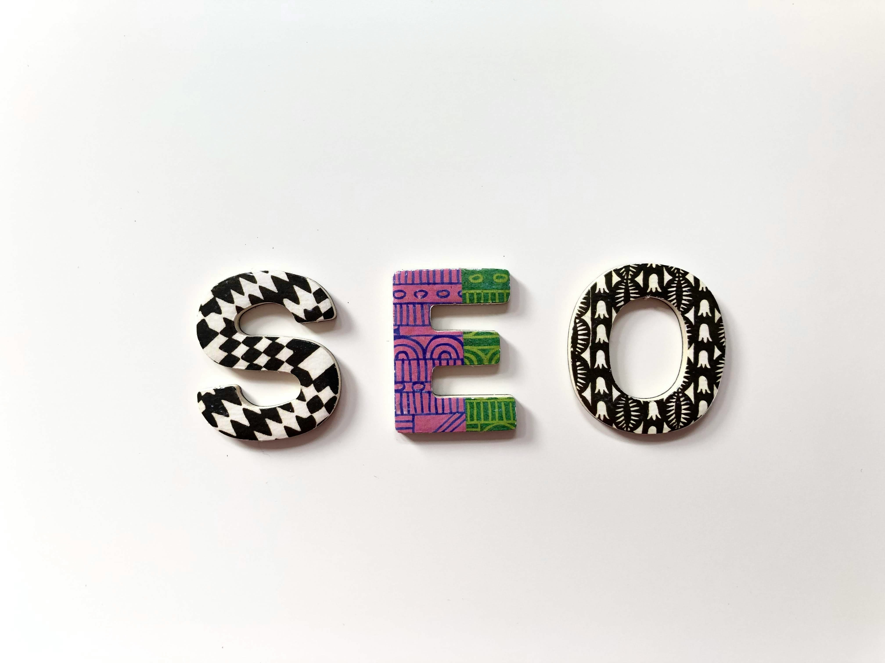

Welcome
This website was created for SEO on-page optimization practice.
Start Here
Latest Articles
Hero Image (Above the fold)
This image loads immediately and affects LCP.

Lazy Loaded Image
This image loads only when scrolling.

This website was created for SEO on-page optimization practice.
This image loads immediately and affects LCP.
This image loads only when scrolling.
